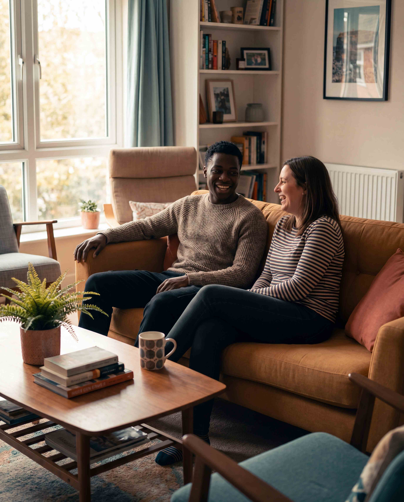
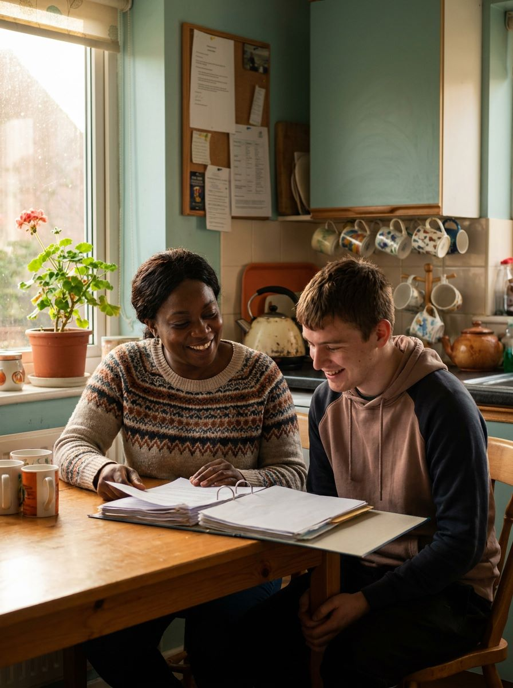
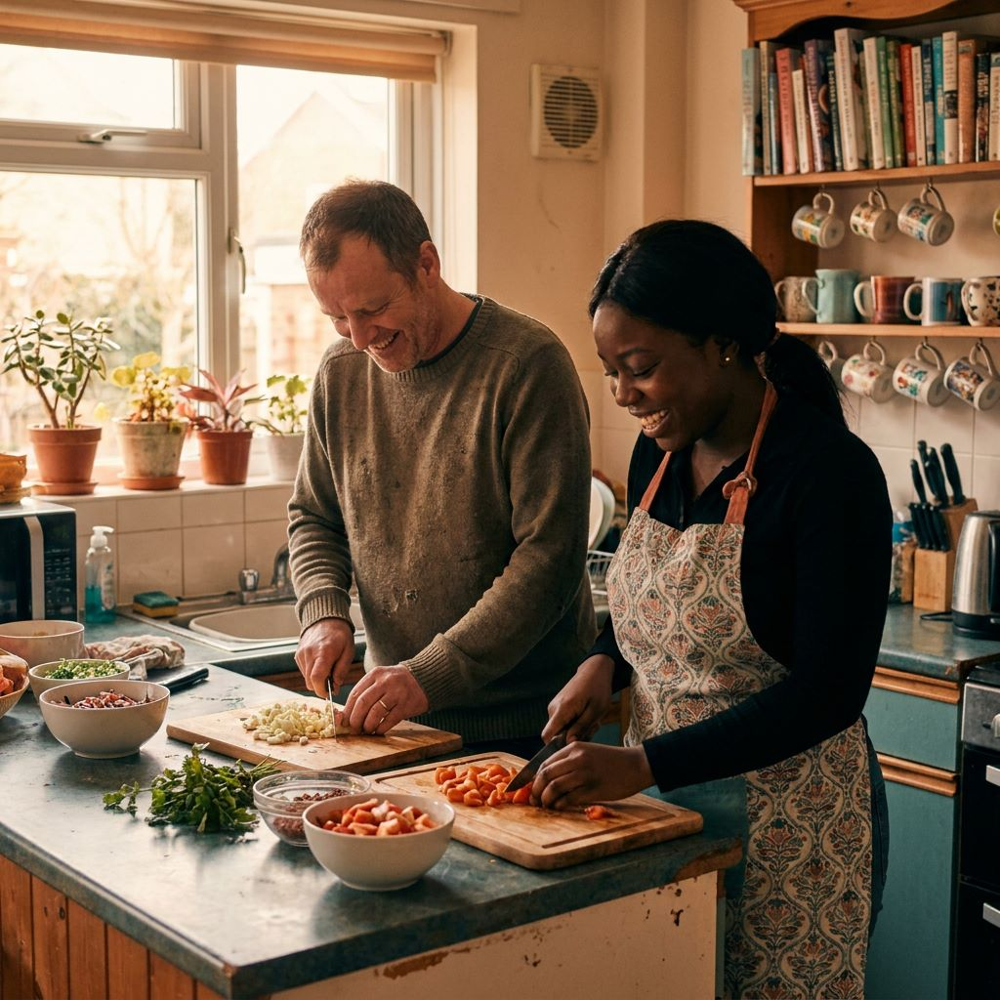

Ten questions to ask before choosing a supported living provider
A practical checklist for families and care coordinators comparing providers.
Read the articleRegistered supported living provider
Alpha Globe delivers person-centred support for adults with high to complex mental health needs — helping the people we support move, at their own pace, toward confidence, purpose and a life of their own choosing.


Why families choose Alpha Globe
Are you looking for reliable, compassionate supported living for yourself or someone you love? We built Alpha Globe around one belief: everyone deserves support that responds to who they are, not just what they've been through.
Every plan starts with listening — to the individual, their family, and the professionals who already know them.
Robust risk and safeguarding practice that protects dignity and independence rather than limiting it.
Our goal is always forward movement — toward skills, community, contribution, and self-directed living.
What we provide
Alpha Globe is a registered supported living provider delivering person-centred support for vulnerable adults with high to complex mental health needs — helping people eventually make a positive contribution, enjoy and achieve, and self-actualise as adults.
Skilled, compassionate support for people living with complex and enduring mental health conditions, delivered with dignity and consistency.
Learn morePositive behaviour support built on understanding triggers and needs, reducing distress rather than simply managing incidents.
Learn moreOne-to-one support to access education, employment, leisure and community life — building the confidence to belong.
Learn moreIndividualised risk assessment and positive risk-taking frameworks that protect wellbeing without limiting independence.
Learn moreRound-the-clock, on-call cover for every person we support — because wellbeing doesn't keep office hours.
Learn morePractical help with meal planning, budgeting and home life — building everyday skills for lasting independence.
Learn moreOur approach
We pride ourselves on a person-centred staffing approach, tailoring support to the unique needs of each individual. Our comprehensive model addresses both emotional and practical needs to support wellbeing holistically.
Support that's there when it's needed, day or night.
Staff trained to focus on building genuine independence.
Safe, comfortable homes designed to feel like home.
Support for a wide range of mental health and complex needs.

In their words
The team took the time to understand my son as a person, not a case file. Eighteen months on, he's cooking for himself and volunteering twice a week.
As a social worker, I've referred three service users to Alpha Globe. Communication has been consistently clear, and risk plans are genuinely person-centred.
I didn't think I'd ever live independently again. My key worker never gave up on me, even on the hard weeks. I'm proud of where I am now.
From the blog
A practical checklist for families and care coordinators comparing providers.
Read the article
Beyond the buzzword: how person-centred planning shapes daily support.
Read the article
Guidance for families navigating a difficult but often positive transition.
Read the article